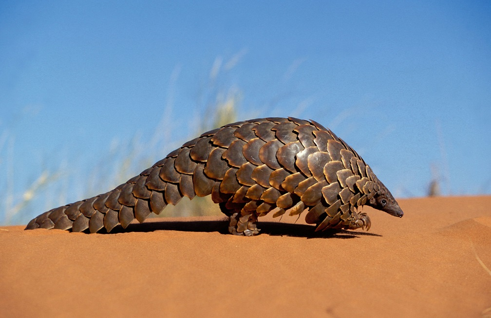
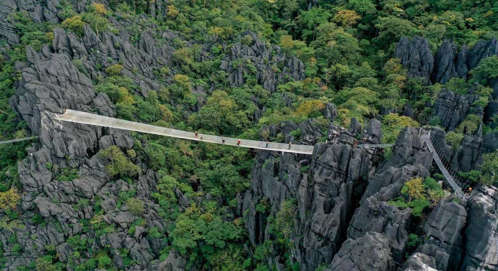
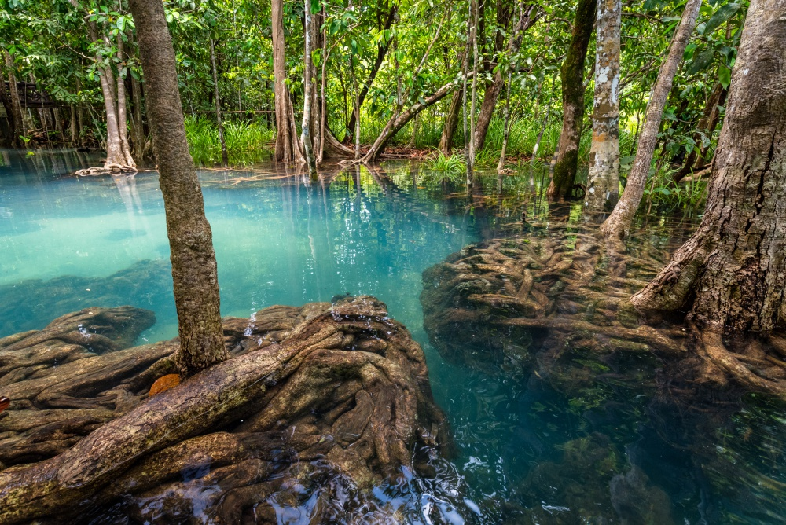

ລາວເປັນໜຶ່ງໃນປະເທດທີ່ມີຄວາມຫຼາກຫຼາຍທີ່ສຸດດ້ານຊີວະນາໆພັນໃນອາຊີຕາເວັນອອກສ່ຽງໃຕ້. ຕາມການສຳຫຼວດລະບຸວ່າ ປະເທດລາວມີ 247 ພັນສັດ ລວມທັງສັດ
ໃກ້ສູນພັນເຊັ່ນ:
ເສົາຫຼາ(Pseudoryx nghetinhensis), ແລະ ຟານເຂົາໃຫຍ່ (Megamuntiacus vuquangensis).ລາວມີສາຍພັນປາຫຼາຍກວ່າ 481 ສາຍພັນ, ລວມທັງ
22 ສາຍພັນທີ່ແປກໃໝ່.ແຕ່
ເຖິງຢ່າງໃດກໍ່ຕາມ, ມັນກໍ່ຍັງເປັນທີ່ຮູ້ກັນດີວ່າລະບົບຊີວະນາໆພັນຂອງລາວໄດ້ຮັບຜົນກະທົບດ້ານລົບຍ້ອນການຕັດໄມ້ທຳລາຍປ່າ. ນອກນີ້ຄວາມຫຼາກຫຼາຍດ້ານຊີວະນາໆພັນ
ຂອງລາວກໍ ຍັງໄດ້ຮັບ
ຜົນກະທົບຈາກການຄ້າຂາຍສັດປ່າທີ່ມີຄຸນຄ່າສູງຈາກປ່າໃນລາວໃຫ້ແກ່ຕະຫຼາດໃນຫວຽດນາມ ແລະ ຈີນ, ພ້ອມທັງການລັກລອບຂົນຍ້າຍສັດປ່າທີ່ຜິດກົດໝາຍຈາກອາຟຣິກາໃຕ້ໄປ
ຫວຽດນາມ
ແລະ ຈີນ ຜ່ານທາງປະເທດລາວ. ປັດໄຈອື່ນໆທີ່ສົ່ງຜົນໃຫ້ເກີດການສູນເສຍຊີວະນາໆພັນລວມມີ ເຕັກນິກການຂຸດຄົ້ນໄມ້ແບບບໍ່ຍືນຍົງ ແລະ ການສ້າງຖະໜົນຫົນທາງ ເຊິ່ງອຳນວຍຄວາມສະດວກໃຫ້
ນັກລ່າສັດປ່າເຂົ້າເຖິງເຂດປ່າໄມ້ໄດ້ງ່າຍຂຶ້ນ
 
ນັບແຕ່ຕົ້ນຊຸມປີ 1990s, ລັດຖະບານລາວໄດ້ລິເລີ່ມການພັດທະນາຂອບກົດໝາຍແບບທົ່ວເຖິງ ແລະ ຄົບຖ້ວນ ເພື່ອຈະໄດ້ກາຍເປັນປະເທດທີ່ “ປົກຄອງດ້ວຍຫຼັກກົດໝາຍ”
ພາຍໃນປີ
2020.ເຊິ່ງລວມມີການກະກຽມກົດໝາຍ ແລະ ນະໂຍບາຍຕ່າງໆເພື່ອແກ້ໄຂບັນຫາສິ່ງແວດລ້ອມ. ລັດຖະທຳມະນູນລາວ (ສະບັບຮອງຮັບຄັ້ງທຳອິດປີ 1991 ແລະ ດັດແກ້ປີ 2003ໄດ້ເນັ້ນ
ໜັກ
ເຖິງຄວາມສຳຄັນຂອງສິ່ງແວດລ້ອມ ໂດຍກຳນົດການປົກປັກຮັກສາສິ່ງແວດລ້ອມໃຫ້ເປັນໜ້າທີ່ຂອງພົນລະເມືອງລາວທຸກຄົນ. ນອກຈາກນັ້ນ, ກົດໝາຍວ່າດ້ວຍການປົກປັກຮັກສາສິ່ງແວດລ້ອມໄດ້
ມີການ
ປະກາດໃຊ້ໃນປີ 1999 ເຊິ່ງເປັນເອກະສານຫຼັກດ້ານກົດໝາຍທີ່ສະໜັບສະໜູນການປົກປັກຮັກສາສິ່ງແວດລ້ອມ. ກົດໝາຍອື່ນໆທີ່ໄດ້ຮັບການຮັບຮອງ ທີ່ກ່ຽວພັນກັບບັນຫາສິ່ງແວດລ້ອມ
ລວມມີກົດໝາຍ
ປ່າໄມ້ (2007), ກົດໝາຍວ່າດ້ວຍສັດປ່າ ແລະ ສັດນໍ້າ (2007), ກົດໝາຍທີ່ດິນ (2003), ກົດໝາຍກະສິກຳ (1998) ແລະ ກົດໝາຍວ່າດ້ວຍນໍ້າ ແລະ ຊັບພະຍາກອນນໍ້າ (2017).
ວຽກງານສຳຄັນອັນໜຶ່ງທີ່ລັດຖະບານລາວພວມເອົາໃຈໃສ່ແມ່ນການສ້າງປ່າສະຫງວນແຫ່ງຊາດ (NPAs). ປ່າສະຫງວນແຫ່ງຊາດທີ່ຖືກສ້າງຕັ້ງຂຶ້ນໃນປີ 1993 ໃຫ້ເປັນເຂດປົກປັກຮັກສາຊີວະນາໆພັນ
ແຫ່ງຊາດ, ມີຈຸດປະສົງເພື່ອປົກປັກຮັກສາປ່າໄມ້, ສັດປ່າ ແລະ ແຫຼ່ງນໍ້າ, ຮັກສາຄວາມອຸດົມສົມບູນຂອງທຳມະຊາດ ແລະ ຄວາມໝັ້ນຄົງດ້ານສິ່ງແວດລ້ອມ, ແລະ ປົກປັກຮັກສາຄວາມສວຍສົດງົດ
ງາມຂອງທຳມະຊາດເພື່ອການພັກຜ່ອນ ແລະ ການຄົ້ນຄວ້າ. ປະຈຸບັນນີ້ ລາວມີປ່າສະຫງວນແຫ່ງຊາດ 23 ແຫ່ງ ເຊິ່ງກວມເອົາພື້ນທີ່ 30,000 ຕາລາງກິໂລແມັດ, ຫຼື 14% ຂອງເນື້ອທີ່ດິນທັງໝົດ.
ນອນນັ້ນຍັງມີການສ້າງນະໂຍບາຍອື່ນໆເພື່ອຫຼຸດຜ່ອນການຕັດໄມ້ທຳລາຍປ່າ ເນື່ອງຈາກລັດຖະບານລາວມີເປົ້າໝາຍສ້າງພື້ນທີ່ປົກຄຸມປ່າໄມ້ໃຫ້ໄດ້ 70% ຂອງເນື້ອທີ່ທັງໝົດພາຍໃນປີ 2020. ໃນປີ
2016, ນາຍົກລັດຖະມົນຕີໄດ້ອອກຄຳສັ່ງເລກທີ 15 ວ່າດ້ວຍ “ຮັດແໜ້ນຄວາມເຂັ້ມແຂງໃນການຄຸ້ມຄອງ ແລະ ກວດກາການຂຸດຄົ້ນໄມ້, ການຂົນສົ່ງໄມ້ ແລະ ທຸລະກິດກ່ຽວກັບໄມ້” ເພື່ອສ້າງຄວາມ
ເຂັ້ມງວມໃນການຄວບຄຸມທຸລະກິດໄມ້ແປຮູບ ແລະ ການຕັດໄມ້ ລວມເຖິງການຫ້າມບໍ່ໃຫ້ສົ່ງອອກຜະລິດຕະພັນໄມ້ທີ່ຍັງບໍ່ຖືກແປຮູບໂດຍສົມບູນ. ໃນປີ 2015, ລັດຖະບານລາວໄດ້ເຂົ້າຮ່ວມການເຈ
ລະຈາກັບສະຫະພາບເອີຣົບ ກ່ຽວກັບຂໍຕົກລົງການຮ່ວມມືແບບສະໝັກໃຈ ເຊິ່ງຖືເປັນສ່ວນໜຶ່ງຂອງແຜນງານການບັງຄັບໃຊ້ກົດໝາຍປ່າໄມ້, ການຄຸ້ມຄອງ ແລະ ການຄ້າໄມ້ (FLEGT). ໂຄງການນີ້
ແນໃສ່ສ້າງຕັ້ງລະບົບ ເຊິ່ງອະນຸຍາດໃຫ້ພຽງແຕ່ໄມ້ທີ່ຖືກຢັ້ງຢືນວ່າໄດ້ຮັບການຂຸດຄົ້ນ ແລະ ແປຮູບຢ່າງຖືກກົດໝາຍເທົ່ານັ້ນທີ່ສາມາດສົ່ງອອກໄປຍັງບັນດາປະເທດສະມາຊິກສະຫະພາບເອີຣົບ.
ກ່ຽວກັບການປ່ຽນແປງຂອງສະພາບອາກາດ, ລັດຖະບານ ສປປ ລາວໄດ້ໃຫ້ສັດຕະຍະບັນໃນອະນຸສັນຍາ UNFCCC ປີ 1995, ພິທີສານກຽວໂຕປີ 2003 ແລະ ຂໍ້ຕົກລົງປາຣີວ່າດ້ວຍການປ່ຽນແປງຂອງ
ສະພາບອາກາດປີ 2016. ປີ 2010 ລັດຖະບານໄດ້ສ້າງຍຸດທະສາດແຫ່ງຊາດວ່າດ້ວຍການປ່ຽນແປງຂອງສະພາບອາກາດ ແລະ ຍັງເນັ້ນໜັກເຖິງຄວາມສຳຄັນຂອງຊັບພະຍາກອນທຳມະຊາດ ແລະ
ສິ່ງແວດລ້ອມ ໃນເປົ້າໝາຍທີ 3 ຂອງແຜນພັດທະນາເສດຖະກິດສັງຄົມແຫ່ງຊາດຄັ້ງທີ 8 (NSEDP) (2016-2020). ແຜນ NSEDP ຄັ້ງທີ 8 ໄດ້ຮ່າງຍຸດທະສາດເພື່ອການພັດທະນາສີຂຽວເພື່ອ
ຄວາມຍືນຍົງຂອງຊັບພະຍາກອນທຳມະຊາດ ແລະ ສິ່ງແວດລ້ອມ ແລະ ຄວາມສາມາດໃນການຮັບມືຕໍ່ໄພພິບັດທຳມະຊາດ ແລະ ການປ່ຽນແປງຂອງສະພາບອາກາດ. ເຊື່ອມໂຍງກັນການຈັດຕັ້ງປະຕິບັດ
NSEDP ຄັ້ງທີ 8 ລັດຖະບານໄດ້ຮັບຮອງເອົາການລິເລີ່ມການພັດທະນາສີຂຽວ ເຊິ່ງເປັນສ່ວຍໜຶ່ງຂອງໂຄງສ້າງການຮ່ວມມືຂອງບັນດາປະເທດສະມາຊິກທະນາຄານໂລກສຳລັບ ສປປ ລາວ (2017-2021)
, ເພື່ອເປັນແນວທາງສຳລັບການພັດທະນາແບບຍືນຍົງ, ການປົກປັກຮັກສາສິ່ງແວດລ້ອມ ແລະ ຄວາມສາມາດໃນການຮອງຮັບຕໍ່ການປ່ຽນແປງຂອງສະພາບອາກາດຂອງລາວ.